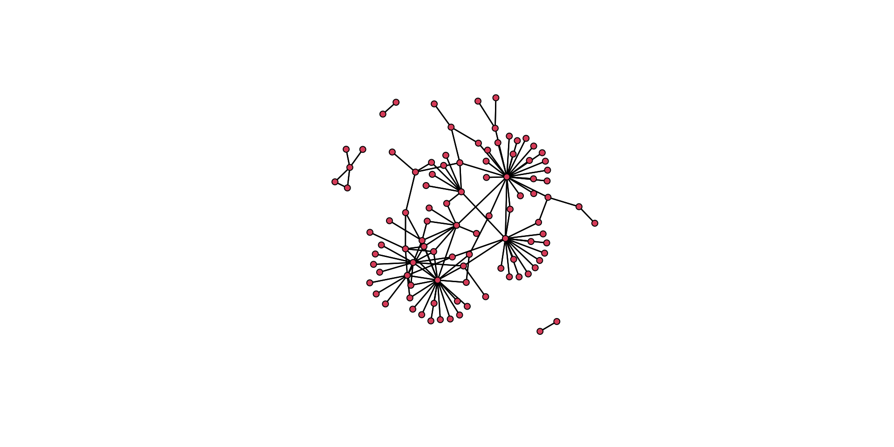
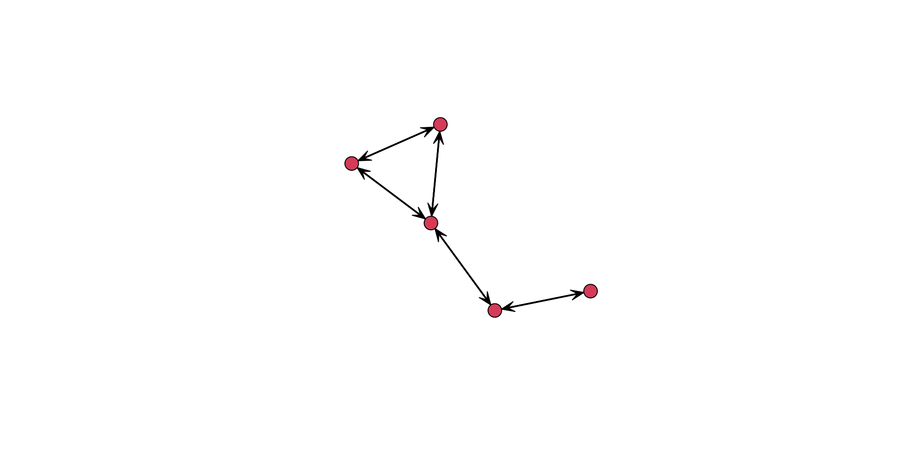
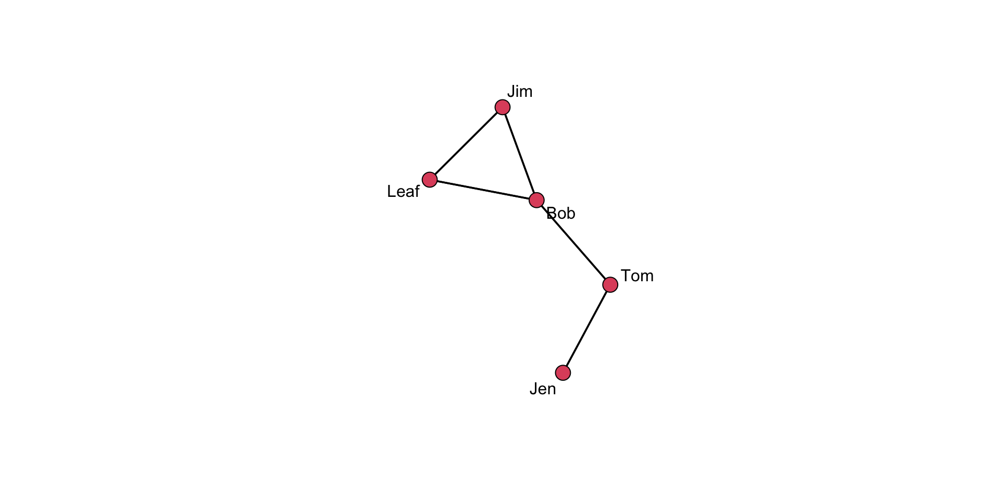
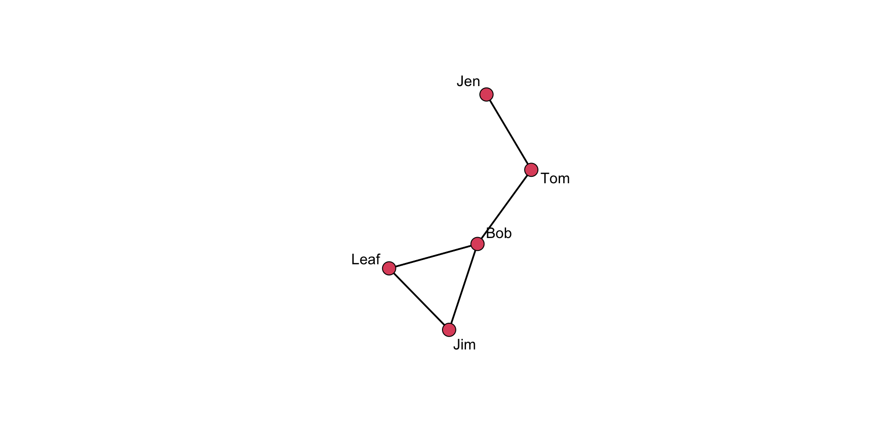
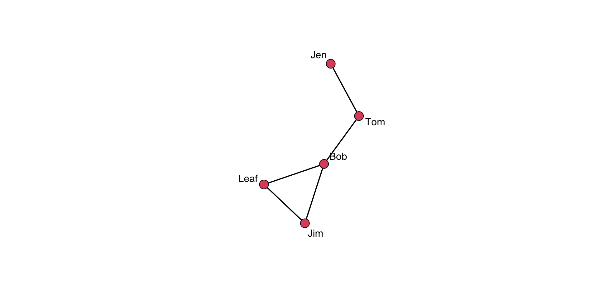

Basics of Network Visualization
Let’s be honest, network analysis is awesome. Where does that awesomeness come from? One sure reason is visualization! There is nothing like a beautiful network visualization that conveys lots of information and is aesthetically pleasing. Right?
Not convinced? Examine the plot below. Without me giving you any information about this figure (which is from James Moody and Peter Mucha’s paper, Portrait of Political Party Polarization), what does it tell you?
What about this one showing political blogs? (from David Lazer and colleagues paper Computational Social Science). What does the visualization “say” or “tell you”?

In this tutorial, you will be introduced to the basics of visualizing networks using the gplot() function in the sna package. We will also look at some approaches to building plots to help guide you in honing your SNA toolkit.
Network Visualization
One of the great features of working with network data is the ability to see the data through visualization. Visualizing the structure of a network is helpful for discerning patterns that might be of interest.
Douglas Luke’s (2015: 47) A User’s Guide to Network Analysis provides several guidelines, or aesthetic principles, for what makes a graphical layout of a network easy to understand and interpret. These are:
- Minimize edge crossings
- Maximize the symmetry of the layout of nodes
- Minimize the variability of the edge lengths
- Maximize the angle between edges when they cross or join nodes
- Minimize the total space used for the network display
Think about each of these suggestions. Why do they aid in visualizing the network? How do they assist in avoiding conveying information that is not really there? Ponder these questions for a bit…
Getting Started
Now that you have a sense of what a good visualization should try to do, let’s look at an example to help illustrate working with the gplot() function in the sna package.
First, we need to install the sna package using install.packages( "sna" ) and load the library using library( sna ).
Remember, if you have already installed a package then you do not need to use the install.packages() function. But, if you have not installed the package in a while, you should use update.packages() to incorporate any changes that have been made to the page.
Next, let’s use a network of phone calls among members of the Sicilian Mafia as discussed by Cavallaro et al. (2020). This network is available in the SNACpack package and is called: mafia_calls_net. To learn more about the data, use ?mafia_calls_net to pull up the help page.
Altogether, that looks something like this:
# install the packages
install.packages( "sna" )
# call the sna library
library( sna )
# call the SNACpack library (NOTE the case sensitivity!)
library( SNACpack )
# if you need to reinstall SNACpack for whatever reason, remember
# to use devtools like this:
# devtools::install_github("jacobtnyoung/SNACpack")Now that we have sna and SNACpack loaded, we can examine the mafia_calls_net (to learn more about the data, use ?mafia_calls_net to pull up the help page). We can do this just by typing out the name of the network:
mafia_calls_net Network attributes:
vertices = 98
directed = FALSE
hyper = FALSE
loops = FALSE
multiple = FALSE
bipartite = FALSE
total edges= 123
missing edges= 0
non-missing edges= 123
Vertex attribute names:
vertex.names
No edge attributesTake a look at what is printed out. We see that there are 98 vertices (i.e., nodes) and 123 edges (i.e. ties). So, the network represents 123 phone calls between 98 individuals. Note that it is undirected.
Let’s plot it!
# Compare two different plot layouts.
# Here is a circle.
gplot( mafia_calls_net, gmode = "graph", mode = "circle" )
# Here is a separate layout.
gplot( mafia_calls_net, gmode = "graph", mode = "fruchtermanreingold" )
Think back to the aesthetic elements we discussed above. How do these two plots differ in how well they convey the same information? Which one is better? Why is it better?
To think about these questions, let’s plot the two layouts together. To do this we will use the par() function. This allows us to partition the plotting region.
# plot the circle layout (add the main() argument for a title)
gplot( mafia_calls_net, gmode = "graph", mode = "circle", main = "Plotted as a circle" )# plot the Fruchterman Reingold layout
gplot( mafia_calls_net, gmode = "graph", mode = "fruchtermanreingold", main = "Plotted using a spring algorithm" )Again, think about our questions: How do these two plots differ in how well they convey the same information? Which one is better? Why is it better?
Ok, that was a lot. Let’s work our way back through the mechanics of building a plot to better get a sense of what we are doing.
Working with the gplot() Function
Let’s take a look at some of the visualization capabilities of gplot(). Let’s start by looking at the function’s help page: ?gplot.
To see the various functionality of the function, let’s work with our example of an undirected network. Remember that the network undirected_example_net is available in SNACpack. Let’s plot it.
gplot( undirected_example_net )
Hold on, this plot shows arrows. But this network is undirected. What gives?
That is because gplot() assumes a directed network. We can see this in the help menu, ?gplot, where is shows that for the type of network, the gmode= argument defaults to a directed graph. To fix this we can either:
manually turn off the display of arrows using the
usearrows=argument,gplot( undirected_example_net, usearrows = FALSE )or indicate that the object to be plotted is a undirected graph or graph,
gplot( undirected_example_net, gmode = "graph" )
The gplot() function has a number of arguments that can be used to better display the information contained in the network.
For example, we can add labels to the vertices using the network.vertex.names() function.
gplot(
undirected_example_net,
gmode = "graph",
label = network.vertex.names( undirected_example_net )
)
Alternatively, we could add in a string of names for the label:
gplot( undirected_example_net, gmode = "graph", label = c( "Jen", "Tom", "Bob", "Leaf", "Jim" ) )
Or we could define them as an object:
names <- c( "Jen", "Tom", "Bob", "Leaf", "Jim" )add to the plot using
gplot( undirected_example_net, gmode = "graph", label = names )
There is no “right” way to do this, so figure out what works best for you!
A great feature of R is that we can tune the graphing parameters. Here are several examples:
Labels:
Add boxes around the labels,
boxed.labels = TRUEChange label size using
label.cex, such aslabel.cex = 1.5Color the labels using
label.col=, such as:label.col = "blue"
Colors:
different colored names, combine
label.col=with thec()function. Such as:label.col = c( "red", "blue", "green", "orange", "grey" )different colored nodes,
vertex.col=argument. Such as:vertex.col=c("red","blue","green","orange","grey")different colored edges, using
edge.col=, such as:edge.col=c("red","blue","green","orange","grey")
There is a LOT of functionality to the gplot() function. See the arguments in the help file: ?gplot. I would encourage you to take some time to look through it and play around with the various features.
Adjusting Plot Layout
When a layout is generated, the results can be saved for later reuse using the coord= argument.
# Set the seed for the random number generator
# so we can always get the same plot layout
set.seed( 507 )
# Define an object that will be the coordinates we want to use
coords <- gplot(
undirected_example_net,
gmode = "graph",
label = network.vertex.names( undirected_example_net )
)
# Show the vertex coordinates
coords x y
[1,] 3.240723 6.485256
[2,] 4.008480 5.193206
[3,] 3.087186 3.921695
[4,] 1.572750 3.503118
[5,] 2.600828 2.449065Take a close look at the coords object. What do the values represent? Think about how this information is used in the plot.
Now, we can pass the coordinates into a plot.
# Saved layouts can be used via the coord= argument:
gplot(
undirected_example_net,
gmode = "graph",
label = network.vertex.names( undirected_example_net ),
coord = coords
)
Cool but, why do this? The placement of the nodes shift when we call the gplot() function just due to the operation of the algorithm. Controlling where nodes are plotted in the 2-dimensional space is useful if we want to show different aspects of the plot. Note that we can have different layouts of the nodes. If we like a particular one, we can save the coordinates.
But, suppose the default settings are insufficient and we want to make a few small changes. The interactive= argument allows for tweaking.
# First, set up the coordinates you want
coords <- gplot(
undirected_example_net,
gmode = "graph",
label = network.vertex.names( undirected_example_net ),
coord = coords,
interactive=TRUE
)When this renders on your system, move a few of the nodes around. Then, after you close the window it will save the coordinates.
# Then, use these in the plot
gplot(
undirected_example_net,
coord = coords, # use the coords object in the "coord=" argument
gmode = "graph",
label=network.vertex.names( undirected_example_net )
) A Layering Approach
As we have seen, we can start with a basic plot and add information. Creating graphics in this way is referred to as layering because we are stacking additional layers of elements on top of each other.
Take a look at this series of plots:
The plot uses several layers of information:
- the size of the nodes (
vertex.cex) - the color of the nodes (
vertex.col) - the color of the edges (
edge.col)
As we create a plot, we want to think about what information we should convey and how best to convey that information (i.e. colors?, shapes?, size?, all of the above?)
Plotting the Power/Influence Network from the Prison Inmate Networks Study (PINS)
The Prison Inmate Networks Study (PINS) examines the social networks of prison inmates in a state correctional institution. The study was unique in that it was the first in nearly a century to collect sociometric data in a prison. The researchers collected data on several types of networks.
Let’s plot the power and influence network, which was created by asking individuals whom they believed was “powerful and influential” on the unit. This network is available in SNACpack and is called: pins_pi_net.
First, take a look at the network:
pins_pi_net Network attributes:
vertices = 205
directed = TRUE
hyper = FALSE
loops = FALSE
multiple = FALSE
bipartite = FALSE
total edges= 161
missing edges= 0
non-missing edges= 161
Vertex attribute names:
age race time_in_prison vertex.names
No edge attributesWe see that it has 205 vertices (nodes), 161 edges (trust nominations), and is directed.
We also see that there are several attributes. To learn more about the attributes, review the help documentation for the network by using ?pins_pi_net.
We can access network attributes using a shorthand notation: %v%. The operate let’s us pull a specific attribute. We can look at the various vertex data by using the shorthand network %v% "attribute". For example:
pins_pi_net %v% "age"shows the age variable.pins_pi_net %v% "race"shows the race variable.
# look at the values for age
pins_pi_net %v% "age" [1] 30 60 43 33 54 40 52 54 42 49 24 30 49 43 45 25 43 61 44 29 48 49 41 36 33
[26] 22 32 35 33 32 30 28 22 37 35 47 62 40 44 50 29 51 50 33 34 44 53 24 34 65
[51] 27 49 25 29 48 39 53 23 37 56 50 27 45 47 37 27 37 43 40 68 46 41 24 53 50
[76] 26 40 45 43 37 38 59 32 35 28 37 33 30 47 30 37 48 42 37 30 55 36 31 31 29
[101] 26 55 39 30 52 29 50 69 37 39 39 42 47 38 54 41 28 21 33 47 51 44 51 35 28
[126] 30 54 26 60 58 31 32 46 37 45 23 39 35 40 39 52 32 57 24 24 52 61 33 51 47
[151] 39 29 30 51 52 47 28 69 51 21 49 55 72 23 25 44 45 36 40 24 23 50 53 32 28
[176] 29 46 40 32 39 30 30 26 25 44 57 42 30 43 42 33 36 26 24 26 33 37 34 33 24
[201] 24 37 42 47 32# look at the values for race
pins_pi_net %v% "race" [1] 1 2 1 2 2 2 1 2 2 3 2 1 1 1 1 2 1 2 1 2 3 1 1 3 4 2 1 1 3 2 2 2 2 1 2 2 2
[38] 3 1 2 2 1 1 3 1 2 2 3 2 1 1 1 2 3 1 1 1 1 3 1 2 1 1 2 2 3 2 1 2 1 1 1 2 2
[75] 1 1 2 2 3 2 2 1 3 1 1 1 2 2 2 1 2 2 2 3 1 1 1 2 2 2 2 1 3 2 2 2 1 1 3 2 1
[112] 1 1 2 2 1 3 2 2 1 2 1 2 1 1 2 1 2 1 2 1 2 3 3 2 2 3 3 3 3 2 2 2 3 2 1 1 2
[149] 2 3 2 1 2 1 1 1 2 2 2 3 2 2 1 1 1 2 2 2 1 2 1 1 1 2 2 1 1 1 1 2 2 2 1 2 2
[186] 2 1 2 1 1 1 3 2 2 2 1 2 2 2 3 2 3 3 2 2Now, we can use that information in our plot. For example:
gplot( pins_pi_net,
arrowhead.cex=0.5,
vertex.cex = pins_pi_net %v% "age" )YIKES!!! What is wrong?
The problem is that we need to rescale the vertex attribute so that the nodes are not too big. Essentially, we want to be able to rework the values of the attribute so the plot sizes make sense. In SNACpack there is a function called vertex_rescale that does just that! I take a vector for plotting, and it allows you to specify the minimum and maximum values. Use ?vertex_rescale for more information.
We can use the vertex_rescale function to rescale the vertex attribute so it looks better:
# now execute the plot
gplot( pins_pi_net,
arrowhead.cex=0.5,
vertex.cex = vertex_rescale(
pins_pi_net %v% "age", # the attribute we want to plot
0.5, # the minimum size of a node
1.5 # the maximum size of a node
)
)Note that the plot above has a lot of “whitespace” due to the margins. We can adjust this using the par() function.
# tweak the margins to cut some whitespace
par( mar = c( 0.1,0.1,0.1,0.1 ) )
# now execute the plot
gplot( pins_pi_net,
arrowhead.cex=0.5,
vertex.cex = vertex_rescale( pins_pi_net %v% "age", 0.5, 1.5 ) )
Try adjusting the minimum and maximum values in the vertex_rescale function and see how it changes the plot.
Our plot is looking better, but there is still room for improvement. Let’s drop the isolates (using the displayisolates = FALSE argument) to help with the visualization.
par( mar = c( 0.1,0.1,0.1,0.1 ) )
gplot( pins_pi_net,
displayisolates = FALSE,
arrowhead.cex=0.5,
vertex.cex = vertex_rescale( pins_pi_net %v% "age", 0.5, 1.5 ) )As we build layers, we can get a fairly useful graphic that tells us a lot of information:
par( mar = c( 5,0.1,3,0.1 ) )
gplot( pins_pi_net,
main="PINS Power & Influence Network", # add a title
vertex.col = pins_pi_net %v% "race", # color the nodes by the race variable
displayisolates = FALSE, # don't display the isolated cases
arrowhead.cex = 0.5, # augment the size of the arrowheads
vertex.cex = vertex_rescale( pins_pi_net %v% "age", 0.5, 1.5 ), # size the nodes by the Age variable
sub = "Nodes colored by Race, \n edges colored by Info net \n nodes sized by Age" # add a subtitle
)
Test Your Knowledge Exercises
- When plotting an undirected network, why might
gplot()still display arrows? How can this be resolved? - Experiment with adding labels to a network plot. What are some ways to customize label appearance? Why might label size or color be important?
- Use the
vertex_rescale()function to adjust node sizes based on a vertex attribute. Try some different values. How do the different values influence your understanding of the network? - Explain why saving node coordinates using the
coord=argument can be useful. Demonstrate how to save and reuse coordinates in a network plot. - Describe the concept of layering in network visualization. Create a plot that layers at least three attributes (e.g., node size, color, edge attributes).
- Compare a basic network plot of the PINS dataset with one that incorporates multiple attributes. What additional insights does the more detailed visualization provide?
Tutorial Summary
There is nothing like a beautiful network visualization that conveys lots of information and is aesthetically pleasing. Now you know how to get there! As you have seen, there is a ton of flexibility. I would encourage you to spend some time tinkering with the various arguments for the gplot() function to get a feel for what it can do.